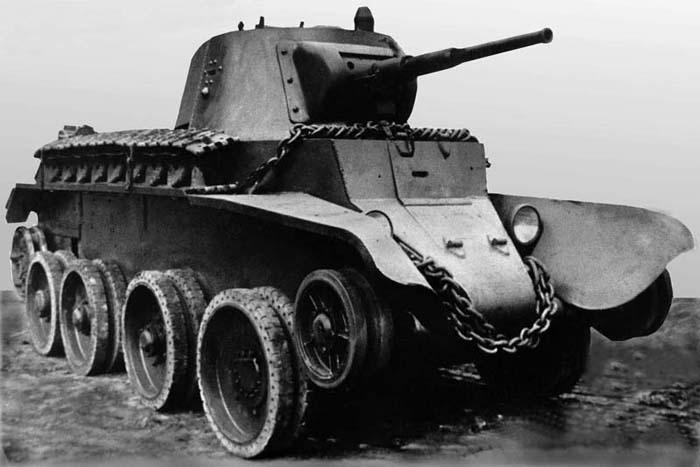

Typu BT
Rozpoznawalny szybki czołg lekki, masowo produkowany w latach 1932-1941. Mógł się poruszać zarówno na gąsienicach jak i na kołach.
T-26
Czołg lekki z okresu przed II wojną światową. Używany do wsparcia piechoty oraz zadań rozpoznawczych. Od 1931 do 1940 roku wyprodukowano
ok. 12 000 czołgów w różnych wersjach.

T-28
Czołg średni z okresu przed II wojną światową. Produkcja seryjna ruszyła w połowie września 1932 roku. Wyprodukowano łącznie 503 egzemplarze.

T-35
Stworzony przed II wojną światową, radziecki czołg ciężki, ważący 50 ton z 11 osobową załogą. Wyprodukowano 61 egzemplarzy, gdzie większość z nich padło ofiarą awarii silnika.